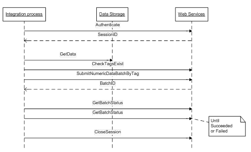

Before attempting to execute any action in the Management System, the client needs to authenticate. If not, an "Invalid Session ID" exception will be thrown.
The appropriate sequence of steps is:

In order to authenticate the client must call the function
GUID Authenticate(string userName, string password)
providing the username and password. If successful, the function will return the Session ID, which must be preserved by the client for future reference. If the username or password is invalid, an "Authentication exception" will be thrown.
Some restrictions apply to users who use EMS Web Services:
The username and password must be provided only once, at the very beginning of the session. Successful login will issue the Session ID to the client, which must then be provided as a special SOAP header with any call to the Web Service. The Server internally maps the Session ID to User.
The Session has an expiration time (as set within the client system). If the user has been idle for the specified period of time, the Session becomes invalid and the client needs to re-login and obtain a new Session ID.
Internally all objects in the Management System are identified by a unique ID. However clients have no way to control these IDs. This means that the client cannot write software that uses the Object IDs because the ID cannot be known before the object is created. Also, in the case of object re-creation, the object ID is changed.
To address those problems, Object Tags are used. The client can assign a string Tag to any Compliance Object. The Tag must be unique within the system. Usually Tags are named so that it is easy to find the object in the system if the system has some kind of regular structure. For example "GR_1_OP" might be decoded as "Greg River/Location 1/Opacity Data".
When data is uploaded it must be associated with the specific requirement to which it belongs. This mapping is done by Tag ID.
Before doing a data upload, it is recommended that all Tags in the batch to be submitted be validated with the validation function in TreeService.asmx (see Tree Service):
string[] CheckTagsExist(string[] objectTags)
"objectTags" is a list of tags to be checked for existence. The function will return a list of invalid tags, if any. If this function returns a non-empty result, appropriate action must be taken by the client.
To submit a data batch to EMS, call the function:
GUID SubmitNumericDataBatchByTag(XmlElement batch)
from DataService.asmx web service (see DataService). This function is asynchronous and returns a BatchID for this data batch. The parameter "batch" is specially formatted xml. For example:
<SubmitNumericDataBatch xmlns="http://enviance.com/2012/DataService">
<batch>
<DataPoint>
<RequirementId xsi:type="TagID">
<Tag>sample_tag_id</Tag>
</RequirementId>
<Collector>sample_col</Collector>
<Value>10.99</Value>
<Complete>2013-04-30T11:01:24.0832839-07:00</Complete>
</DataPoint>
</batch>
<partialProcess>false</partialProcess>
<autoResubmit>false</autoResubmit>
</SubmitNumericDataBatch>
As noted above, Tag is the unique identifier of the object in the system and is set up by the system user. Other attributes, Collector, Collected, Type, Value are the same fields used to enter data manually using the Web interface.
The formal xml schema definition for this parameter can be obtained at the DataService.wsdl. See DataService.
Data upload function is asynchronous. This means that after successful data upload and de-serializing, the server puts the data and information concerning the action that needs to be executed into a queue. The server executes the action to insert the data into the system at a later time. This makes it impossible for the client to wait for the result of the data upload, because the wait time is indeterminate. In order to give the client the ability to know the result of data upload, the data upload function returns a unique ID for the batch process. The client can then periodically query the system asking for the status of the batch process.
A query for the Batch Process can return terminal (Failed or Succeeded) or non-terminal (Waiting or Processing) status. If there was manual intervention into the Command Log, another terminal status is possible, "Resubmitted". For more info on error handling see Error Handling.
The function signature is:
CommandStatusCode GetBatchStatus(GUID batchID)
It is located in DataService.asmx. See DataService.
For security reasons, the client should log out as soon as the task is complete.
The logout function signature is:
void CloseSession()
It is located in AuthService.asmx. See Authenticate.
The client must provide the Session ID in the SOAP header like any other function.